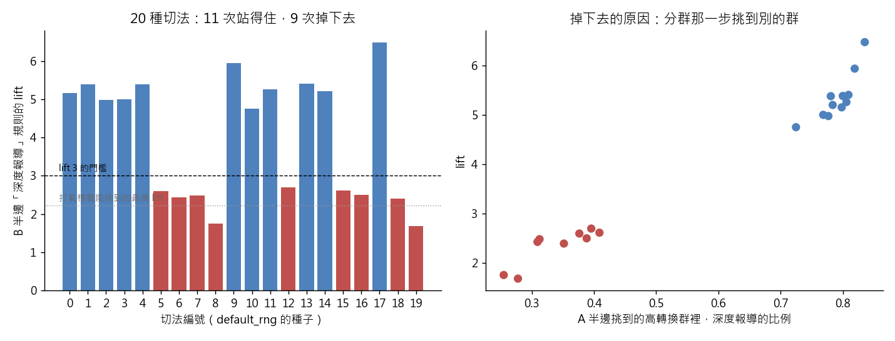

練習 15 - 會賣訂閱的稿子
在本單元中，會介紹第 15 題背後的商業問題、它練的是哪一種資料分析，以及從資料到結論的完整做法、程式與圖表。建議先回 Hub - 資料分析練習案例庫 自己試著做一次，再來對照這一頁。
有人會這樣問你
分群跟我說有一群內容特別會帶訂閱，那我下個月到底要叫記者做什麼樣的稿？給我一句可以直接寫進製作規範的話，順便告訴我這句話有多可靠、什麼情況下會不成立。
用到的資料：content_monthly_flat（L1）、content、content_monthly、dim_section、staff（L2 要自己 join）
對應單元：沒有標籤的時候怎麼分群
這一題在商業上要回答什麼
製作規範會影響整個編輯部下個月做什麼稿，所以需要一句可以執行、而且下個月還成立的話，同時要清楚它只是關聯，不是「多寫就多賣」。
這一題練的是哪一種資料分析
這一題練的是關聯規則（association rules）與穩定性檢驗。用 support、confidence、lift 找出哪些屬性組合容易落進高轉換群，再用多次切半驗證確認規則不是單一批資料的偶然。候選規則越多，越需要這一步。
29 個品項的單項加兩兩組合，一共 435 條候選規則，過了最低支持度的還有 118 條。在這麼多條裡挑 lift 最高的，就算把標籤隨機打亂，每次也挑得出 lift 1.5 到 2.2 的規則，所以「自己驗」把門檻放在 lift 3：低於 3，亂猜也差不多做得到。見 搜尋空間與河內塔
lift 取以 2 為底的對數，就是這條規則的逐點互資訊（PMI）。最強那條 lift 5.66，約等於 2.5 bits：知道一篇稿是「深度報導且標題沒數字」，關於它會不會落進高轉換群，你多知道了 2.5 bits。見 Entropy 與 Shannon 資訊理論
一步一步怎麼做
- 兩段接起來。
- 第一段用行為比率（停留、跳出、分享、留言、撞牆率、撞牆後轉換率）做 K-means，找出撞牆後轉換率最高的那一群當標籤。
- 第二段只拿「稿子還沒發就已經決定的屬性」二元化成品項：content_type、section_name、is_paywalled、has_number_in_headline、字數分三段，用關聯規則找哪些屬性組合落進那一群的 lift 最高。
- 第三段做穩定性檢驗：資料隨機切一半，A 半重跑分群，B 半用 A 的中心點指派標籤，看規則的 lift 還在不在；切法至少換 20 種（例如 np.random.default_rng。到 default_rng(19)），只切一次看不出穩不穩。
工具怎麼選 用 Python 的理由：同一套流程要重跑三、四次，寫成函式再迴圈最省事，靠複製貼上會讓你自己都搞不清楚跑的是哪一版。
看完整程式（Python）
from _kmg import *
from sklearn.cluster import KMeans
from sklearn.metrics import adjusted_rand_score
from sklearn.preprocessing import StandardScaler
f = dedupe(flat()).reset_index(drop=True)
def feats(d, leak=False):
F = pd.DataFrame({
"dwell_per_pv": d["dwell_sec_total"] / d["pv"],
"bounce": d["bounce_sessions"] / d["sessions"],
"share_k": d["share_cnt"] / d["pv"] * 1000,
"comment_k": d["comment_cnt"] / d["pv"] * 1000,
"hit_rate": d["paywall_hit_cnt"] / d["sessions"],
"conv_hit": (d["conversion_cnt"] / d["paywall_hit_cnt"]).fillna(0),
})
if leak:
F["log_total_pv_lifetime"] = np.log(d["total_pv_lifetime"])
return F.replace([np.inf, -np.inf], 0).fillna(0).reset_index(drop=True)
def fit_clusters(d, leak=False, seed=42):
F = feats(d, leak)
sc = StandardScaler().fit(F)
km = KMeans(n_clusters=4, n_init=10, random_state=seed).fit(sc.transform(F))
conv = pd.Series(F["conv_hit"].values).groupby(km.labels_).mean()
return sc, km, int(conv.idxmax()), leak
def high(d, model):
sc, km, hi, leak = model
return pd.Series((km.predict(sc.transform(feats(d, leak))) == hi).astype(int), index=d.index)
def items(d):
I = pd.DataFrame(index=d.index)
for v in sorted(d["content_type"].unique()):
I["type=" + v] = d["content_type"] == v
for v in sorted(d["section_name"].unique()):
I["section=" + v] = d["section_name"] == v
I["paywalled"] = d["is_paywalled"].astype(bool)
I["not_paywalled"] = ~I["paywalled"]
I["number_in_headline"] = d["has_number_in_headline"].astype(bool)
I["no_number_in_headline"] = ~I["number_in_headline"]
I["words<1000"] = d["word_cnt"] < 1000
I["words1000-2000"] = (d["word_cnt"] >= 1000) & (d["word_cnt"] < 2000)
I["words>=2000"] = d["word_cnt"] >= 2000
return I
def rules(I, y, min_support=0.03):
base, cols, rows = y.mean(), list(I.columns), []
for i, a in enumerate(cols):
for b in [None] + cols[i + 1:]:
ante = I[a] if b is None else (I[a] & I[b])
if ante.mean() < min_support:
continue
conf = y[ante].mean()
rows.append({"ante": a if b is None else a + " & " + b, "support": ante.mean(),
"confidence": conf, "lift": conf / base})
return pd.DataFrame(rows).set_index("ante")
model = fit_clusters(f)
y = high(f, model)
print("高轉換群基準比例", float(y.mean()))
I = items(f)
Rf = rules(I, y).sort_values("lift", ascending=False)
print("lift 前五：" + "；".join("%s（confidence %.2f、lift %.2f）" % (k, v["confidence"], v["lift"]) for k, v in Rf.head(5).iterrows()))
KEY = ["type=feature & no_number_in_headline", "paywalled & words>=2000", "type=feature"]
print("最強規則", Rf.index[0])
print("深度報導且標題無數字 confidence", float(Rf.loc[KEY[0], "confidence"]))
print("深度報導且標題無數字 lift", float(Rf.loc[KEY[0], "lift"]))
print("付費牆且兩千字以上 lift", float(Rf.loc[KEY[1], "lift"]))
print("深度報導 lift", float(Rf.loc[KEY[2], "lift"]))
# 穩定性：20 種切法，A 半分群、B 半套 A 的中心點，看「深度報導」這條規則
rows = []
for s in range(20):
mask = np.random.default_rng(s).random(len(f)) < 0.5
A, B = f[mask].reset_index(drop=True), f[~mask].reset_index(drop=True)
yb = high(B, fit_clusters(A))
RB = rules(items(B), yb)
lift = float(RB.loc["type=feature", "lift"]) if "type=feature" in RB.index else 0.0
share = float(B.loc[yb == 1, "content_type"].eq("feature").mean())
rows.append({"seed": s, "lift": lift, "feature_share": share})
S = pd.DataFrame(rows)
held, fell = S[S["lift"] >= 3], S[S["lift"] < 3]
print("20 種切法的「深度報導」lift：" + "、".join("%d→%.2f" % (a, b) for a, b in zip(S["seed"], S["lift"])))
print("lift 還站得住（≥ 3）的切法數", len(held))
print("站得住的 lift 最低", float(held["lift"].min()))
print("站得住的 lift 最高", float(held["lift"].max()))
print("掉下去的 lift 最低", float(fell["lift"].min()))
print("掉下去的 lift 最高", float(fell["lift"].max()))
print("掉下去時 高轉換群裡深度報導佔比 最低", float(fell["feature_share"].min()))
print("掉下去時 高轉換群裡深度報導佔比 最高", float(fell["feature_share"].max()))
print("站得住時 高轉換群裡深度報導佔比 最低", float(held["feature_share"].min()))
print("站得住時 高轉換群裡深度報導佔比 最高", float(held["feature_share"].max()))
print("lift 與深度報導佔比的相關", float(S["lift"].corr(S["feature_share"])))
# 課堂概念：搜尋空間與 PMI。候選規則有幾條、打亂標籤後最高 lift 能到多少
n_items = I.shape[1]
print("品項數", n_items)
print("候選規則（單項＋兩兩組合）", n_items + n_items * (n_items - 1) // 2)
print("過了最低支持度 0.03 的規則", len(Rf))
print("最強規則的 PMI（bits）", float(np.log2(Rf["lift"].iloc[0])))
shuffled = []
for s in range(20):
ys = pd.Series(np.random.default_rng(100 + s).permutation(y.values), index=y.index)
shuffled.append(float(rules(I, ys)["lift"].max()))
print("標籤打亂 20 次，每次挑到的最高 lift：" + "、".join("%.2f" % v for v in shuffled))
print("打亂標籤後最高 lift 的最小值", min(shuffled))
print("打亂標籤後最高 lift 的最大值", max(shuffled))
leak_model = fit_clusters(f, leak=True)
lab_clean = model[1].predict(model[0].transform(feats(f)))
Zl = leak_model[0].transform(feats(f, True))
lab_leak = leak_model[1].predict(Zl)
z_leak = pd.Series(Zl[:, -1]).groupby(lab_leak).mean()
fig, ax = plt.subplots(1, 2, figsize=(11, 4.2))
col = np.where(S["lift"] >= 3, "#4f81bd", "#c0504d")
ax[0].bar(S["seed"], S["lift"], color=col)
ax[0].axhline(3, color="black", lw=0.8, ls="--")
ax[0].axhline(max(shuffled), color="#999999", lw=0.8, ls=":")
ax[0].text(-0.6, 3.05, "lift 3 的門檻", ha="left", va="bottom", fontsize=8)
ax[0].text(-0.6, max(shuffled) + 0.05, "打亂標籤能挑到的最高 lift", ha="left", va="bottom", fontsize=8, color="#666666")
ax[0].set_xticks(S["seed"])
ax[0].set_xlabel("切法編號（default_rng 的種子）")
ax[0].set_ylabel("B 半邊「深度報導」規則的 lift")
ax[0].set_title("20 種切法：11 次站得住，9 次掉下去")
ax[1].scatter(S["feature_share"], S["lift"], c=col, s=40)
ax[1].set_xlabel("A 半邊挑到的高轉換群裡，深度報導的比例")
ax[1].set_ylabel("lift")
ax[1].set_title("掉下去的原因：分群那一步挑到別的群")
save_fig(fig, "ex15_stability.png")
程式開頭的 from _kmg import * 載入共用的讀檔、去重、換幣別與畫圖函式，內容放在 練習 01 - 月會上的則數對不對。
結果會看到什麼
高轉換群的基準比例約 14.7%。跑出來最強的規則是「內容型態＝深度報導 且 標題沒有數字」→ 落進高轉換群的 confidence 0.83、lift 5.66；「有設付費牆 且 2000 字以上」lift 5.57；光看「內容型態＝深度報導」lift 就有 5.36。但切半重跑就不穩了：20 種切法裡，有 11 次「深度報導」的 lift 還在 4.8 到 6.5，另外 9 次掉到 1.7 到 2.7。掉下去的那幾次，A 半邊的 K-means 挑到的「高轉換群」根本不是深度報導群——那一群裡深度報導只佔 25% 到 41%，站得住的那 11 次是 72% 到 84%。所以這條規則下個月還算不算數，取決於分群那一步挑到哪一群，不是規則本身有多強。但真正該交出去的那句話是反面的：這些規則的前項（深度、長文）跟分群用的特徵（停留時間、轉換率）講的根本是同一件事，規則只是把分群結果翻譯回可以下指令的欄位，它不是新發現，更不是「多寫深度報導就會多賣訂閱」的因果證據——深度報導本來就寫給已經想訂的人看。
- lift 前五：type=feature & no_number_in_headline（confidence 0.83、lift 5.66）；paywalled & words>=2000（confidence 0.82、lift 5.57）；type=feature & paywalled（confidence 0.82、lift 5.56）；type=feature & words>=2000（confidence 0.80、lift 5.41）；type=feature（confidence 0.79、lift 5.36）
- 20 種切法的「深度報導」lift：0→5.16、1→5.39、2→4.98、3→5.01、4→5.38、5→2.60、6→2.43、7→2.48、8→1.76、9→5.94、10→4.76、11→5.26、12→2.70、13→5.41、14→5.21、15→2.61、16→2.50、17→6.48、18→2.39、19→1.68
- 標籤打亂 20 次，每次挑到的最高 lift：1.62、1.94、1.59、2.21、2.02、1.67、1.80、1.86、1.94、1.88、1.66、1.48、1.61、1.50、1.90、1.57、1.72、1.49、1.96、1.80
圖怎麼讀

左圖是 20 種切法下，B 半邊「深度報導」這條規則的 lift：藍色站得住、紅色掉到 3 以下，灰色點線是把標籤打亂時能挑到的最高 lift。右圖說明掉下去的原因：A 半邊挑到的高轉換群裡深度報導越少，lift 就越低。繼續練習
上一題 練習 14 - 讀者眼中有幾種內容、下一題 練習 16 - 月底廣告營收下滑，或回到 Hub - 資料分析練習案例庫 挑別的題目。
學生版｜更新於 2026-09-13 11:59